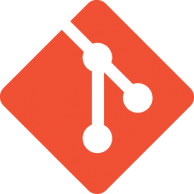

Soy un joven universitario, natural de Huancayo, con una decidida aspiración de forjar una destacada
carrera como Ingeniero de Sistemas y de expandir mis horizontes a nivel internacional. Considero que
mi carácter se cimienta en valores inquebrantables como la honestidad y la lealtad, virtudes que han
sido pilares fundamentales en mi desarrollo profesional.
Nombres: Jhoan Carlos Apellidos: Condor Callupe Edad:: 22 años Correo: Jcarloscc1101@gmail.com Fecha de Nacimiento: 13/11/2001
Informatica
Lenguajes de Programación
Sistemas Operativos
Bases de Datos
Herramientas de Desarrollo

Caracteristicas
• Habilidades tecnológicas
• Trabajo en equipo
• Resolución creativa de problemas
• Manejo de dinero
• Adaptabilidad
Educacion
Salesiano Técnico "Don Bosco", El Tambo
Ene 2014 - Dic 2018
Secundaria
Graduado del Colegio Salesiano Técnico "Don Bosco", donde obtuve el certificado como Auxiliar
Técnico en Carpintería. Además, tuve el honor de ser seleccionado para representar a mi institución
en el Colegio Salesiano del Callao. Asimismo y en el concurso de música "Nueva Acrópolis”.
Universidad Nacional del Centro del Perú
Ago 2019 - actualmente
Cursando la carrera de "Ingeniería de Sistemas"
Actualmente, me encuentro cursando la carrera de Ingeniería de Sistemas en la Universidad Nacional
del Centro del Perú, donde mi enfoque se centra en la creación, diseño y optimización.
Experiencia
Asesor de experiencia
Cineplanet, Huancayo, Perú
Dic 2021 - Ago 2023
Ocupé el puesto de Asesor de Experiencia en la empresa Cineplanet, donde llevé a cabo una variedad
de funciones. Asimismo, gracias a la confianza depositada en mí por mis superiores, tuve la
oportunidad de trabajar con datos para proyectos universitarios, ademas de ser reconocido como
estrella del mes.
Practicante
COMSITEC S.A.C., Huancayo, Perú
Set 2023 - Dic 2023
He adquirido experiencia como practicante de ingeniería de sistemas en la empresa de venta de
computadoras COMSITEC S.A.C. Durante mi tiempo allí, participé activamente en labores relacionadas
con la mejora de la página web y la actualización de la base de datos.